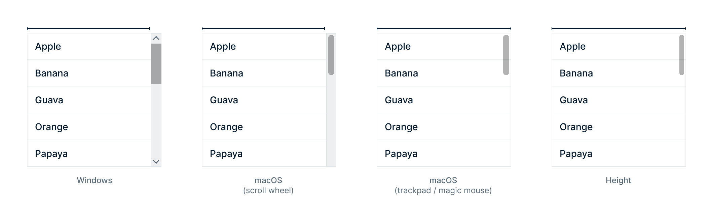
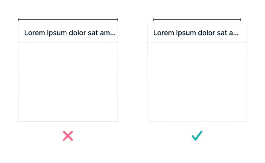
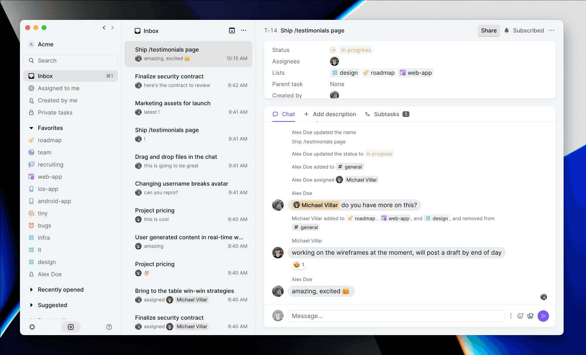
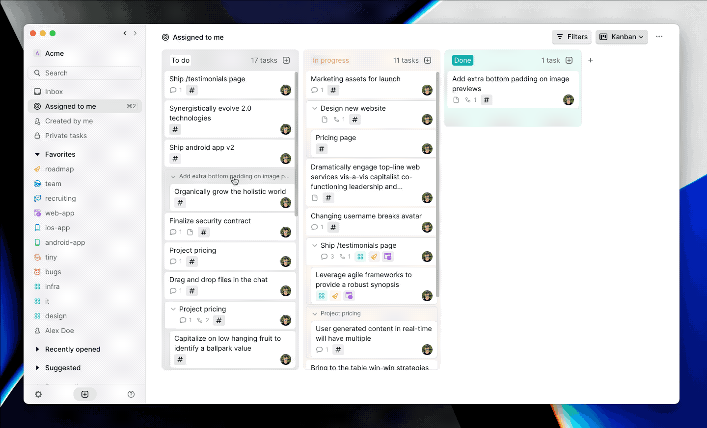
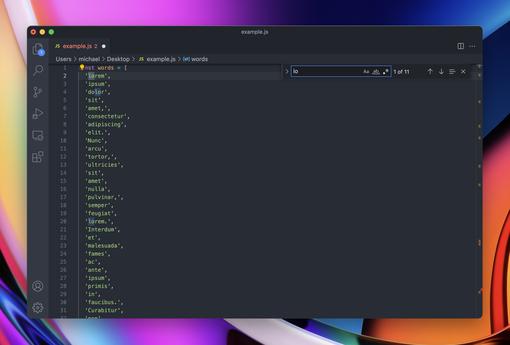
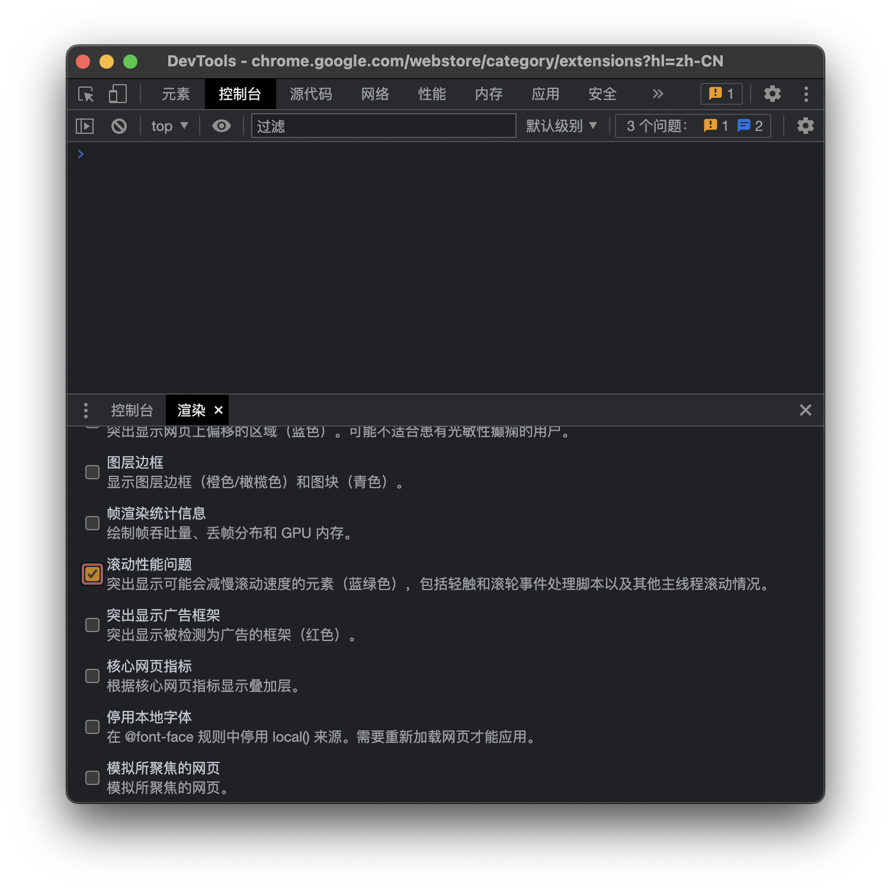

译文｜Web app 中的滚动条：梦回 1984
和上下文菜单（context menus）一样，滚动条（scrollbars）可说是无处不在，但无论是用户、开发者，还是设计师，都很少会对它们细细打量。
虽说不同操作系统、不同平台上的滚动条，无论是样貌还是举止，在过去都大差不差，但时至今日，都没有出现跨平台、跨系统的「大一统」。Windows 10 的滚动条与 20 年前的 Windows 95 相比也很难说有多少变化，都是上下两个按钮，中间一个可以拖动的竖条。但同时期里，macOS 的滚动条样式则是经历了翻天覆地的变动，既是由于触控板的使用频率超过了鼠标，也因为触屏设备大行其道。

Web app 的滚动条
和按钮、输入等控件一样，滚动条在 Web app 开发时也有两种选择：使用平台原生的滚动条，或者自定义滚动条样式。下面是三款类别完全不同，但都选择构建自定义滚动条的 Web app。有自定滚动条的 Web app 可以精细调控滚动条行为，针对各自的用例增加专门的滚动条特性，或者只是确保不同平台、不同 UI 下的样式都能保持一致。

本文将列举 Web app 运用自定义滚动条改善用户体验的方式，也会指出 Height 里行之有效的一些最佳做法。
体验一致
滚动条的样式和行为，在不同操作系统、浏览器、滚动设备（触控板、妙控鼠标、滚轮鼠标等）上都不一样。Height 这款 app 以网页端为主，如果使用原生滚动条，那就意味着不同的浏览器和操作系统上，Height 的外观将会各不相同，同时，使用不同的滚动设备也会显著改变 Height 的渲染结果。

在 Windows 和 macOS 上使用鼠标滚轮时，滚动条的外形最大，哪怕不去使用，只要显示出来，可呈现的内容就会相应减少。Height 受到 macOS 可隐藏滚动条的启发，并进一步缩小了滚动条的触发区域。值得注意的是，我们在所有平台上都渲染同一类型的滚动条，让 Height 在 Windows 上的使用体验和 macOS 这个最佳范例一样好。
设计带有隐形滚动条的界面时，需要注意隐形的滚动条「轨道」区域，避免滚动条和内容发生重叠。

将这两点组合起来，无论用户使用什么滚动设备、使用什么操作系统，都可以得到干净整洁的界面。下面是 Height 从原生滚动条切换到自定义滚动条的前后对比：

更易发现
隐形滚动条有时会使得溢出的内容不那么容易被发现。macOS 上的滚动条（使用触控板时默认——译者注）只在滚动时显示，这就使得找到滚动条本就不易，发现显示范围之外的内容则更是难上加难。而由于滚动条滚动后不一会儿就会隐藏，想要点按、拖动滚动条有时也颇需要一点技巧。
Height 中，当鼠标悬浮在滚动区域时，滚动条就会显示出来。如此一来，既解决了上述问题，也保持了界面的有机统一。

自定行为
既然我们在 Height 中设计了完全自定义的滚动条，我们就可以彻底控制显示滚动条的时机。在看板视图下，我们保持滚动条时刻显示，方便浏览内容。我们的滚动条由于设计得很窄，也不会太占视野。

VS Code 则是自定义行为做得不错的又一个范例。VS Code 的「轨道」区域设计得很大，方便显示错误、搜索结果等在文档中出现的位置。

改善性能
自定义滚动条最重要的一个方面就是性能。滚动应当顺畅，不因电脑的不时卡顿而时断时续。
为确保最佳性能，下面是几条关于实现滚动条的建议：
- 底层滚动行为要保持原生。不要用 javascript 覆盖滚动行为，让浏览器自行处理即可。实操中，即保留 CSS 的
overflow属性，同时隐藏原生滚动条。
1 | .ScrollView { |
- 渲染滚动条、获取滚动条宽度时，避免出现布局抖动（layout thrashing）。一个较为简便的解决方案是使用 fastdom。
- 不要让滚动行为发生在主线程上。可以使用 Google Chrome 的 DevTools，勾选「渲染 → 滚动性能问题」1，发现潜在问题。

如上所述，自定义滚动条可以：
- 控制滚动条出现的场合和时机；
- 保持一致的跨平台滚动体验；
- 给滚动条增加专属特性。
总而言之，设计自定义滚动条就像是进行一笔投资。如果活做得不好，违反直觉、性能不佳的滚动条会给用户体验带来灭顶之灾。但如果设计得当，滚动条就可以在显著改善 app 使用感的同时，做到「不碍眼」。
我已开通 Telegram 频道：本夜朽舎，也开通了同名 newsletter，希望多多订阅。欢迎将您的想法、评论、意见、建议发送至 harveyjanson@icloud.com，请注明「讨论」字样，我会尽量回复。
- 1.Chrome 的 DevTools 已支持中文，该功能位于右上角「...」 → 「更多工具」 → 「渲染」。对应英文为「... → More tools → Rendering → Scrolling performance issues。 ↩
译文｜Web app 中的滚动条：梦回 1984
http://harveyjanson.github.io/2022/05/03/2022-05-03-web-app-scrollbars/